Le Boat · Travelopia · Checkout restructure · 2026
The checkout asked for a form. People were still making up their minds.
Rebuilding the Le Boat extras and payment flow around the decision a
traveller is actually making — shipped to eight locales, and measured.
Role
Senior Design Engineer, Growth
Scope
Research synthesis, flow restructure, interaction design, production front-end
Evidence base
36-participant usability study across EN / FR / DE
Shipped as
42 commits over 3 PRs, handed to the Le Boat engineering team
Status
Live to all 8 locales since 20 July 2026. Extras engagement +84%, checkout errors −99.7%
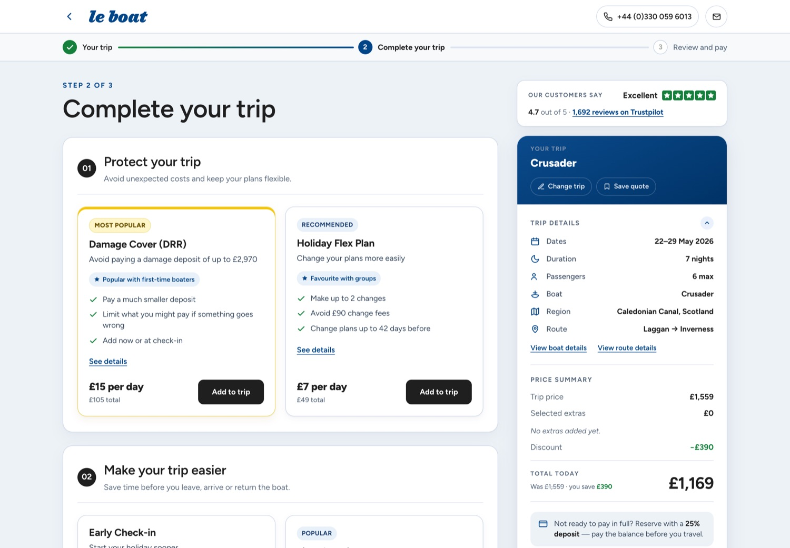
Shipped buildStep 2 — Complete your trip. The step that did not exist as its own page before the restructure. Every screenshot here is captured from the running application.
Click any image to enlarge
01 Where the money was leaking
Extras were an interruption between a decision and a form.
Le Boat sells week-long canal holidays. Extras aren't upsells bolted onto
a cart — damage cover, fuel, early check-in and bike hire are the things
that decide what the week actually feels like. The old checkout treated
them as an aside.
The flow put contact details first, then extras, then payment. By the time
a traveller reached the extras, they had already filled in a form, already
shifted out of planning mode and into transaction mode. Extras sat behind
accordions, priced but not explained, and the summary that should have
anchored the decision was a passive block you couldn't open, edit or act on.
We catalogued six failures in the existing experience:
Disrupted decision-making — the form broke the planning mindset before extras were even shown.
Minimal value communication — a name and a price, with no account of what the money buys.
High decision effort — travellers had to interpret value, evaluate risk and compare options unaided.
No information hierarchy — a flat list where a £2,970 liability sat level with a £50 gift basket.
Limited recommendations or guidance — nothing signalled what mattered or what people like them chose.
A passive summary — extras detail hidden, no way to edit or remove.
What the session recordings showed
Behaviour told the same story before anyone was interviewed. Four patterns
recurred, and each one reads as a specific kind of friction rather than
general dissatisfaction:
Observed behaviour
What it indicates
Users trying to navigate back
Unclear where they were in the flow
Rage-clicking the summary
Expected an interaction that wasn't there
Zig-zag scrolling
Poor structure — no scannable order
Repeatedly switching between options
Decision uncertainty, not comparison
Rage-clicking a summary is the most useful of these. It isn't a usability
nit — it's a traveller telling you, with their mouse, that the running total
is the object they want to manipulate. That single observation ended up
driving more of the redesign than any stated preference did.
The conclusion we took into design: users weren't skipping extras
because they didn't want them. They were skipping because the interface
gave them no way to decide confidently.
About the numbers in this case study
Every research figure, participant quote and build detail here is drawn
from the actual study and the actual repository — the 36-participant
usability test, the twelve findings, the commit history, the
accessibility audit. The commercial figures are now real too.
The flow went live on 20 July 2026 and §10 reports what the analytics
actually show, including the result that contradicts the flattering
version of this story. Where a number is still a model rather than a
measurement — the opportunity sizing in §4, the experiment maths in
§9 — it says so on the face of it, with its assumptions exposed and
adjustable.
02 Reading the evidence
Thirty-six travellers, three languages, two flows.
A comparative usability study put an exposed-card prototype against the
live accordion flow, with think-aloud walkthroughs, ease ratings and
preference capture across English, French and German.
36 / 43
Participants analysed. Seven excluded — all mobile — because the prototype wouldn't load for them.
69%
Preferred the new flow (25 of 36). 9 preferred the current flow; 2 had no preference.
4.3 vs 4.0
Average ease rating, new prototype against the current flow.
1.6 vs 2.4
Average page views. Fewer pages to reach the same decision.
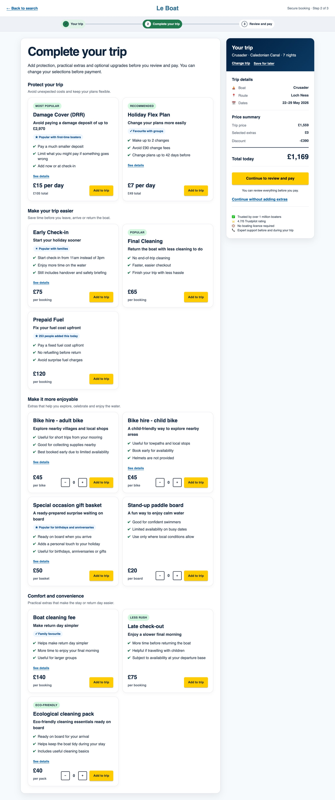
Tested prototypeWhat the 36 participants actually saw. The exposed-card concept, the four outcome-led groups and the "Avoid paying a damage deposit of up to £2,970" framing all originate here. So does finding 02 — nothing bounds the page length.
Preference held across every language segment and both devices, which is
the part that made it actionable — EN 73%, DE 73%, FR 60%; desktop 75%,
mobile 63%. A preference that survives translation and viewport is a
structural signal, not a reaction to a particular screen.
The caveats, stated up front
The new prototype was always shown first, so time-on-task
and engagement figures carry an order effect, and the current flow was
always reviewed second, making its feedback comparative rather than
standalone. The prototype also ran with lower latency than a production
build would. I treated preference (69%) as a strong signal and every
engagement metric as directional only — which is exactly
why the flow shipped with instrumentation and a live A/B plan rather than
a claimed win.
The twelve findings, and which ones I designed against
Not all twelve deserved equal weight. Four were conversion-positive
confirmations, four were friction to remove, and four were genuine
tensions with no clean answer. The numbering below is the study's own.
01
Visibility drives consideration — exposed cards outperform hidden accordions.
Extras in the current flow were "almost hidden" and "could easily be missed". P12: the new prototype "makes me want to purchase upsells".Confirmed
02
Too many extras cause scroll fatigue and decision overload.
Twelve participants. P1: "I would've got bored and irritated." P6: "I'm not even looking or pausing. I just want to get to the bottom."Designed against
03
"Most Popular" and "Recommended" labels effectively guide decisions.
P2: "I like these labels. It catches attention." Consistently noticed and used to steer selections.Confirmed
04
Price shock — extras erode the perceived discount and can sour the whole trip.
P1: "I'd already fixed in my mind about the price… now I'm being asked to add lots of additional things."Designed against
05
The damage-cover nudge works, but divides people.
P4 valued "a big warning about how much I would have to pay". FR P17 found it "pushy".Tension
06
Real-time price tracking in the sidebar is highly valued.
FR P16: "having the summary always visible on the right is very important when about to click pay."Confirmed
07
Extras aren't logically grouped — related items scattered across the page.
P24: "group similar things — leisure options together, money options together."Designed against
08
Per-day plus total pricing works well for comprehension.
P6: "I can see it's 15 pound a day. Actually, that's not so terrible."Confirmed
09
Booking details buried below extras — people want trip context first.
P9: "it would be slightly less confusing to have the actual trip you're trying to buy at the top."Designed against
10
Experienced travellers instinctively decline checkout insurance.
P14: "they're always marked up." A segment no amount of framing should try to override.Tension
11
The card format creates emotional engagement — planning, not purchasing.
P24: "it feels like you're already going on holiday." P6 on the current flow: "it feels more aligned with insurance than booking an exciting trip."Confirmed
12
Protection descriptions lack the concrete numbers people need to commit.
Raised independently by three German participants. P32: "Ich weiß jetzt noch nicht, welche Kaution ich zahlen würde." P42: "Das wäre mir zu dünn für eine vernünftige Entscheidung."Designed against
Finding 12 is the one I'd single out. Three German participants, testing
separately, independently reached the same wall: they were willing to buy
the protection product and couldn't, because the card never told them what
deposit they'd actually pay. That is not a copy problem or a trust problem.
It's a missing number standing between intent and purchase
— the cheapest conversion fix in the entire study, and invisible to anyone
reading only the English transcripts.
03 Getting answers out of the organisation
Most of what a decision needs isn't on the screen.
It's a number somebody else owns. The work is knowing which question to
ask, who holds the answer, and what to build when nobody does.
Three kinds of question, going to three different places. What does the
system actually do — engineering. What does the business already know —
whoever owns the funnel. What does the customer actually do — the
recordings and the research. A question answered late becomes a rebuild.
The same question answered early is a line in a spec.
The question, and who held the answer
What came back, and what it changed
"What actually happens between step 2 and step 3?" Engineering
A backend call re-prices the booking with the chosen extras, and it takes 3–5 seconds. Nobody had designed for that window. Left alone it's a button that looks broken at the exact moment a traveller has committed — so it became an explicit waiting state with the delay named in copy.
"What's the real shape of the booking-note payload?" Engineering
An unbounded array of strings from the reservation system; production surfaced only the first. That answer became a business contract — at most 3 notes, 400 characters each — enforced in a tested function rather than hoped for upstream.
"Does this read as our site, or as a redesign of it?" Brand
It didn't — and the answer came back as specific values from the live site rather than as an opinion: the primary and the canvas were wrong, and there was "too much blue and navy". Colour arguments end fastest when the other party can hand you a number.
"Open the promo field by default, or collapse it?" The business
Open — and it came back already A/B tested. The most valuable answer in the project was one I didn't have to earn. Ask what has already been tested before proposing a test.
"What's the exact deposit split, and who signs it off?" Commercial
Unresolved — and still unresolved at handover. So the rate became a constant and the schedule a pure function of it: the number can move without a redesign, a retest or another meeting. An open question is a parameter, not a blocker.
"Is this comparison inverted?" Engineering, unprompted
A hash check in the production payment utility looked backwards, and it gates payment validation. Reading somebody else's code and asking one question protects more revenue than most design decisions do.
The standing questions
These go into the first conversation of any growth engagement, before
anything is designed. They're ordered so that a vague answer to one makes
the next one sharper.
What is the one number this work should improve? If two people answer differently, that is the finding, and it's a bigger problem than anything on the page.
What do we already know and have never acted on? Most organisations are sitting on a finished study. Acting on it costs nothing and buys the credibility to run the tests that follow.
Where does that number come from, and who else reads it? A metric with two definitions in two dashboards can't settle an argument.
What's the smallest change you'd ship to everyone if it won? The real scope question. It exposes appetite before effort is spent.
What would make you stop the rollout? Agreeing guardrails while everyone is calm is the only time it's easy.
What can't change, and why? Contractual, regulatory, operational. Cheap to ask now; expensive to discover in review.
The pattern underneath all six
Each one converts a design conversation into a question with a
falsifiable answer. That's the actual craft; the interface is downstream
of it. A decision that can't be traced to a number somebody owns
is a preference, and preferences don't survive a quarter.
Where those questions stand
Recording which ones are still open is part of the method, not an
admission. An unanswered question you can name is a research task; an
unanswered question you've quietly replaced with an assumption is a
liability you'll meet again at the read-out.
Question
Status
Consequence
What happens between step 2 and step 3?
Answered
3–5s re-price → an explicit waiting state
What's the real shape of the booking-note payload?
Answered
A 3-note, 400-character contract in a tested function
Does this read as our live site?
Answered
Palette re-pointed at the site's own values
Promo field open or collapsed?
Answered
Open, on a prior test I took on trust
What is the one number this checkout is accountable for?
Open
This case study nominates attach rate. That's my nomination, not an agreed KPI.
What was the extras attach rate before the redesign?
Open
The whole baseline is illustrative until this is pulled.
What did the live bundles experiment return?
Open
Bundles were parked without reading it. That decision is superseded.
What's the exact deposit split, and who signs it off?
Unresolved
Built as a parameter, so the number can move without a redesign.
Does the nudge help or cost conversion?
Unanswerable
No nudge telemetry exists. Specified as a pre-launch requirement.
How many travellers ever opened the old extras accordion?
Open
Production already emits it. The strongest baseline number available, and nobody has pulled it.
Four answered, six open. Two of the open ones — the
accountable number, and the attach rate before any of this — are the kind
that should close before design starts. They didn't. The case study
carries that gap rather than papering over it, because the alternative is
a number I'd have to defend and couldn't.
04 Sizing the prize before drawing anything
What is a point of attach rate worth?
Before the first screen, the question that decides whether this work is
worth a sprint: what does moving extras attach actually pay, and is it
bigger than the risk of disturbing a working checkout?
Extras at Le Boat are high-margin and largely fixed-cost — damage cover,
flex plans and prepaid fuel don't scale in cost with uptake the way a boat
does. That makes attach rate one of the few levers where a design change
flows close to directly to contribution. The model below uses the real
catalogue: damage cover at £105, flex plan at
£49, prepaid fuel at £120,
final cleaning at £65, against a sample trip price
of £1,559.
A deliberately simple model: incremental attached bookings × average
extras basket. It ignores cannibalisation, refunds and seasonality. The
defaults are now the observed figures — ~340 bookings a
month and £420 of extras revenue per booking, both measured over
21 Jul – 29 Sep 2026. Attach rate stays a slider because, as §10
explains, the share of bookings containing an extra still cannot be
measured in the analytics as configured.
At the observed volumes, seven points of attach rate is worth about
£120,000 a year. That reframed the conversation with the business: the
risk wasn't in changing the checkout, it was in leaving a structurally
poor extras step in place for another season.
It also set the bar for the experiment — and, as it turned
out, the bar was the problem. At roughly 340 bookings a month, an effect
of this size is very close to undetectable without a control group. That
was knowable in advance. It is the whole argument of §9, and §10 is what
happens when you ship without acting on it.
05 The structural move
Take the form out of the middle of the decision.
One change preceded every other: contact details stopped interrupting the
part of the journey where people are still choosing what their week
looks like.
Before
Trip → 1. Contact · 2. Extras · 3. Pay → Payment
A form gate before any extras were seen. Three numbered steps inside
one page, so "where am I" had no honest answer. Extras collapsed
behind accordions below the fold.
After
1. Your trip → 2. Complete your trip → 3. Review and pay
Extras become their own step, framed as completing the holiday. Contact
details move next to payment, where the mental mode has already shifted
from choosing to buying.
This restructure came out of the strategy work, not from me — it was
proposed, prototyped and validated in testing before I started building.
I'm including it because everything downstream depends on it, and because
the rename mattered as much as the reorder. "Choose extras" became
"Complete your trip." Under the old label, every card was a request
for more money against a price the traveller had already accepted — which
is precisely the price-shock finding (04). Under the new one, the same cards
are the remaining decisions in planning a holiday. Nothing about the
commercial content changed; the frame it arrives in did.
Five design principles came with it. I treated them as acceptance criteria
rather than as a mood board, which is the difference between a principle
and a poster:
Guide
Recommend what matters, rather than presenting a neutral list and calling it choice.
Simplify
Reduce decision effort. Fewer things visible at once, grouped by what they do for you.
Reassure
Build confidence and reduce perceived risk — with specifics, not adjectives.
Show value
Lead with the outcome, put the price second.
Support control
Never trap. Everything addable is removable, in one action, from where it's shown.
The button language changed on the same logic. Pay £1,559 asks
a traveller to commit before they've reviewed anything, and people
subconsciously read it as "am I being charged now?". The continue action
became "Continue to review & pay" — it names the next
screen, not the transaction, and it tells the truth about where the money
actually moves.
06 Five decisions, and what each one buys
From finding to interface.
Each of these traces a straight line from a specific research finding to
a specific piece of shipped front-end.
What I inherited, and what I decided
The exposed-card concept, the four outcome-led group names, the
value-first copy and the flow order came out of the strategy work and
the tested prototype. They were validated before I touched them, and
claiming them would be dishonest. My work was everything
between a validated concept and a production checkout — the
decisions a concept prototype never has to make. Each decision below
carries its provenance, and the screenshots are labelled
Tested prototypeShipped build or
Parked exploration so you can see
which is which.
Decision 01 · answers findings 01 & 11
Extras get exposed as cards, and never go back behind a click.
The clearest result in the study. Users engage with what they can see;
accordions hid the entire catalogue behind an interaction nobody had a
reason to perform. The card format also did something the study didn't
set out to measure — it changed how the checkout felt.
It feels like you're already going on holiday.
P24, desktop — on the new prototype
It feels more aligned with insurance than booking an exciting trip.
P6, mobile — on the current flow
Those two quotes describe the same catalogue at the same prices. The
delta is entirely presentational, and it's the strongest argument in the
study for treating extras as part of the product rather than as an
ancillary revenue surface.
Decision 02 · answers findings 02 & 07 · mine
Grouping wasn't the problem. Nothing bounded the page.
The tested prototype already grouped extras under the four outcome-led
headings, and testing confirmed people liked them. It still produced the
study's second-biggest complaint: twelve participants reported scroll
fatigue. Grouping labelled the page; it didn't shorten it.
Every extra in every group still rendered, so the page got longer with
every product the catalogue gained.
The study recommended collapsible categories. What shipped is
progressive disclosure inside groups that stay open: each shows its top
two cards, with a "Show N more" toggle for the
remainder.
Collapsing whole categories would have re-created the accordion problem
that finding 01 had just told us to avoid — hiding extras behind a click
people have no reason to perform. Two cards per group keeps every
category visible while giving the page a fixed floor length no matter
how big the catalogue gets.
¹
Action item #7 from the 6 July alignment meeting — "show top 2 per
group, rest behind a Show N more toggle". The tested prototype has no
such control; grep it for "show more" and you get nothing.
commit 6bb5c86 · the checkout's extras catalogue
Shipped buildThe whole step, at desktop width. Compare its length to the tested prototype above — same twelve extras, same four groups, bounded page.
Decision 03 · answers finding 12 · inherited, then held
Keep the real numbers, including the untidy ones.
The card headline — "Avoid paying a damage deposit of up to £2,970" —
came from the strategy work and was in the tested prototype. It is the
single best piece of copy in the project: the price is
anchored against the liability, not the fee, because
£105 read next to £2,970 is a different proposition than £105 read
alone. Finding 12 said the card still wasn't enough — three German
participants wanted to know what deposit they'd actually pay.
The pressure at that point is to invent a clean answer. The study itself
suggested the shape of one: "Your deposit drops from £2,970 to
£500." Deposits at Le Boat don't work that way — they vary by boat
size and destination. So the detail view carries the real ranges:
£220–£660 with cover against
£2,060–£2,970 without, plus the
non-refundable condition in the same
view.
A range is a worse headline and a better answer. It is also the only
version that survives contact with a traveller who reaches the base and
is quoted £640.
²
Rendered as paired cards — "With Damage Cover" against "Without Damage
Cover" — each carrying its deposit range and liability terms.
the damage-cover pop-up's content
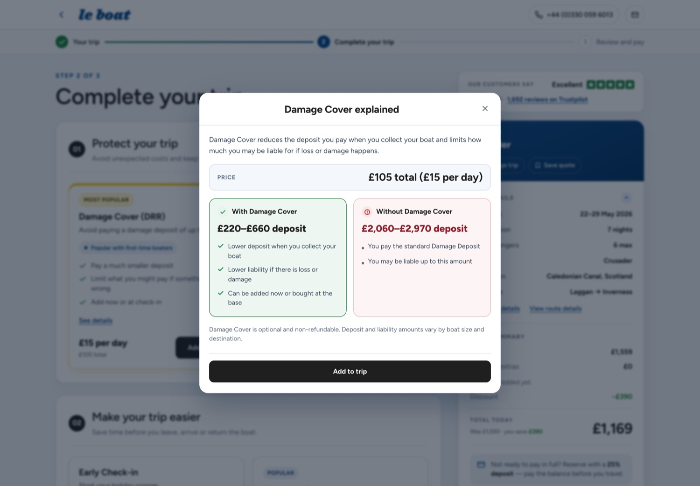
Shipped buildThe answer to finding 12. Per-day and total pricing together (finding 08), and the ranges kept honest rather than rounded into a slogan.
Decision 04 · answers findings 06 & 09
The summary becomes the thing you steer with.
This is the rage-click, answered. People were clicking the summary because
they wanted it to respond. So it now does: it sticks to the viewport on
desktop, updates the total as extras are added or removed, opens each
extra for editing, and carries the trip context that finding 09 said
people wanted before the extras rather than beneath them.
Having the summary always visible on the right is very important when
about to click pay.
P16, French, desktop
On mobile the same object becomes a fixed bottom bar with the running
total and the continue action, expanding into a full booking summary
sheet. Both bars were then made consistent with each other, because two
sticky elements behaving differently on the two steps is a bug in the
mental model even when neither is a bug in the code.
It's also the surface where the price-shock finding (04) gets managed
honestly. The total moves in real time as extras go in, so the number at
the payment step is never a surprise — the traveller watched it get there.
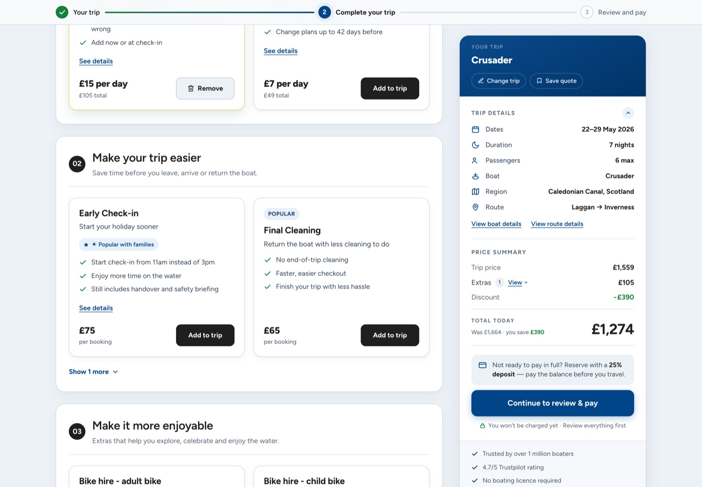
Shipped buildReversibility. The cheapest way to make a decision feel safe.
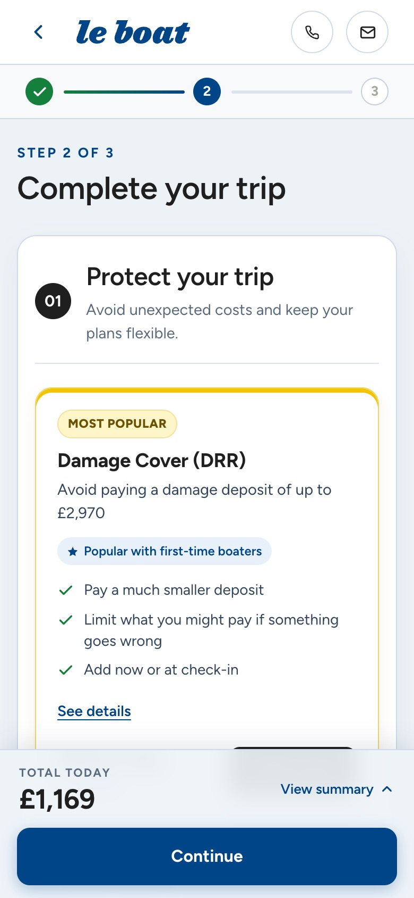
Shipped build390px. 44% of the tested sample. Recommendation 4.
Decision 05 · answers finding 04 · mine
Give the price a second answer: pay a quarter now.
Finding 04 — the discount "swallowed up by extras" — has two possible
responses. You can reduce what's being asked for, or you can change what's
due today. The tested prototype did neither: its payment step offered
card or wallet, an inline card form, and a
Pay £1,169 button. That is precisely the premature-commitment
language the strategy work flagged, and it leaves a price-sensitive
traveller with one option — pay all of it, now.
The important part is that the business already had this
lever. Production carries deposit, middle-payment and
pay-in-full amounts in its booking payload — the capability exists and
has always existed. The prototype simply didn't surface it, which would
have shipped a redesign that quietly removed a conversion route the
company already owned. Catching a regression like that is worth more
than most features, and it is only catchable by reading the production
system rather than the comp.
So what shipped restores it and makes it legible: 25% today to secure the
boat, the balance in two interest-free instalments, with the trade-off
stated rather than buried — pay in full and save 3%, or pay the deposit
and keep the cash. Selecting the deposit expands the schedule with real
dates and amounts, so "instalments" is never an abstraction. The CTA
becomes "Pay £292 deposit", so the amount actually leaving the account
today is never ambiguous.
(Code excerpt removed for sharing. What it does: the deposit is derived from the live total, so extras and discounts flow through, and the remainder lands on the final payment, property-tested so the parts always sum to the whole, at every total.)
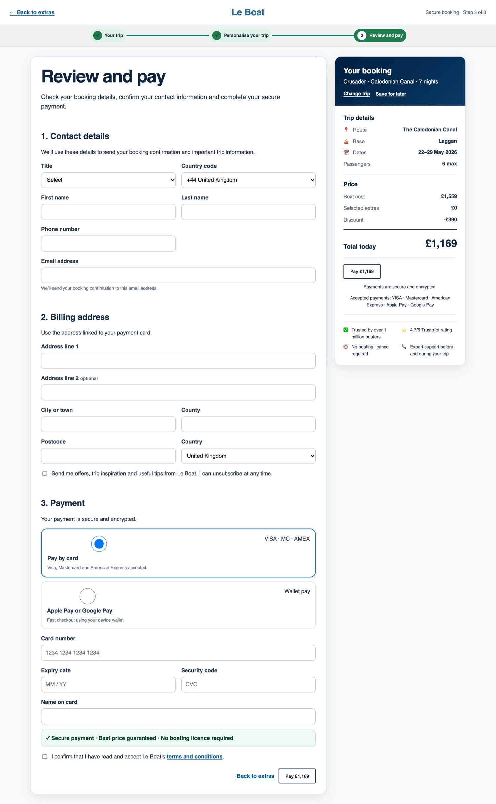
Tested prototypeBefore. Card or wallet, Pay £1,169.
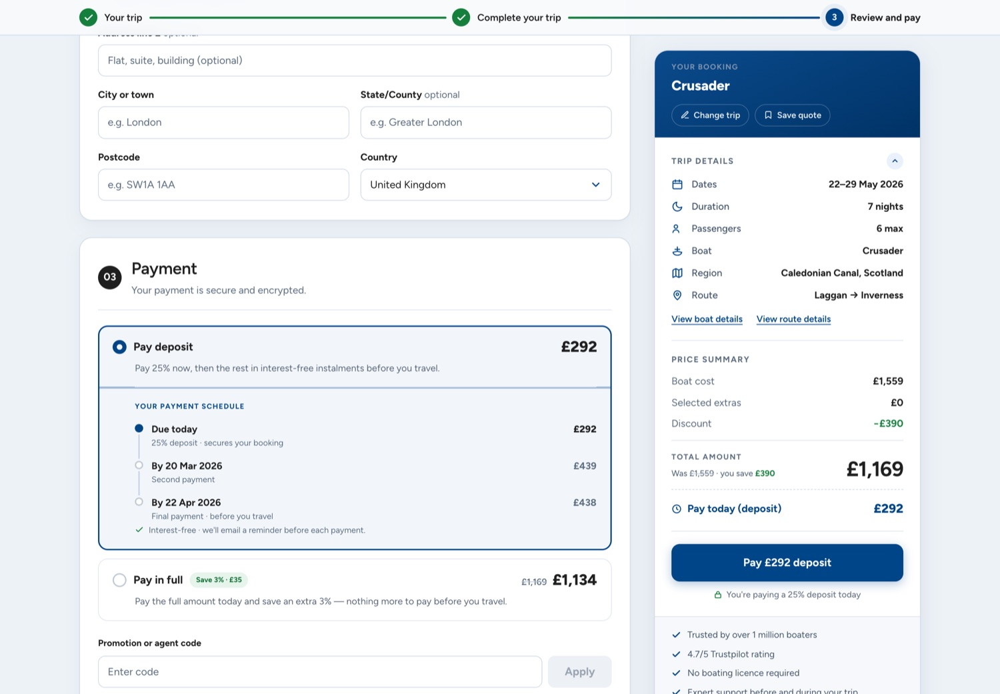
Shipped buildAfter. Two routes, a real schedule, Pay £292 deposit.
I deliberately dropped the "Recommended" tag from the deposit option late
in the build. Recommending a payment method isn't guidance — the better
option depends entirely on the traveller's cash position, which we don't
know. Labelling one as recommended would have been the design system
pretending to information it didn't have.
07 The tension I didn't design away
The nudge that works on most people and offends some.
When a traveller continues without damage cover, a comparison appears
showing what they're carrying: the deposit with cover against the deposit
without. Finding 05 says this works. P4 called it "a big warning about how
much I would have to pay" and meant it as a compliment. P10: "it was a good
prompt."
Finding 05 also says French participant P17 found it "pushy" and felt it
gave "the impression they're forcing you to subscribe". Both reactions are
correct responses to the same component.
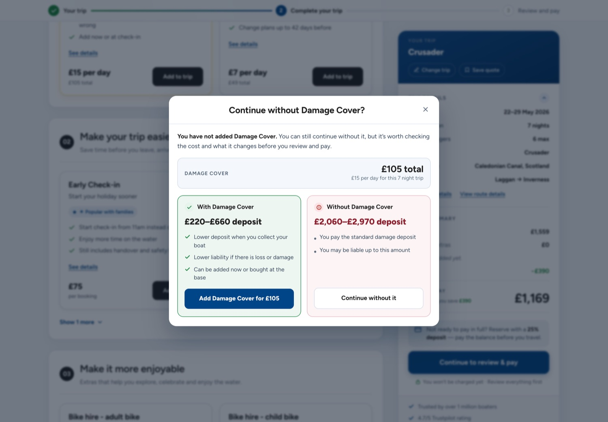
Shipped buildThe component most likely to be wrong. Both the "good prompt" reaction and the "pushy" reaction are responses to this, and only live data separates them.
I kept the intervention and constrained it:
It states facts, not urgency. Two deposit ranges and what each means. No countdown, no scarcity, no "X people bought this in the last hour" on the protection products.
Declining costs one action. The traveller continues from the same view they're interrupted in. A nudge that takes two clicks to escape is a toll, not a prompt.
It fires once. Not on every continue, not again at payment.
The add action sits inside the comparison. If the number changes someone's mind, they act where they were convinced — not by hunting back up the page.
The honest position: this is the component most likely to be wrong, and
it's first on the test roadmap. The study's own recommendation was to
soften it further — an inline comparison rather than a blocking modal — and
that variant is specified and unbuilt. It's an experiment, not a
conviction.
Finding 10 is the related one I chose not to act on. Experienced
travellers decline checkout insurance on principle and source it
themselves. That's a rational, well-informed behaviour. Designing
harder against it would mean designing against the customer's own
interest, and the only tactics that move that segment are the ones this
brand has explicitly ruled out.
08 Build once, ship twice
The cost of the second brand is the number that matters.
Le Boat and Emerald Star are two brands on one checkout. How much a
validated win costs to ship to the second one decides how often anyone
bothers — and that is an architecture decision, not a visual one.
The default outcome is a fork. Someone copies the checkout, re-skins it,
and from that day the two diverge: every experiment gets designed twice,
QA'd twice, made accessible twice, and eventually one of them stops
getting the improvements. The second brand quietly becomes the worse
product, and nobody decides that — it just accretes.
So every brand value is a semantic token with a single override block, and
switching brand is one attribute on the document root. The consequence is
commercial, not aesthetic: a change validated on Le Boat ships to
Emerald Star the same day, at no additional design, build, QA or
accessibility cost. That halves the price of every future
experiment and doubles what each win is worth. Six locales across two
brands is twelve live surfaces from one component tree.
42
Commits across 3 PRs, 29 Jun – 13 Jul 2026
17
Components, ~5,100 lines of TypeScript
6
Locales wired through next-intl
13 / 13
Unit tests passing on the pure business logic
Accessibility is reach, and reach is the denominator
A checkout that fails contrast doesn't fail a standard — it fails a
share of the people already trying to give you money, at the last step,
where there is no second chance. Every conversion rate in this case
study has a denominator, and inaccessible interface silently removes
people from it.
So the flow was swept to WCAG 2.1 AA with axe, both brands, desktop and
mobile, closing at zero contrast violations — the
unreadable greys, a duplicate landmark, an unlabelled sticky region, two
touch targets under the minimum, and a primary colour doing two jobs that
needed two values. It is the least glamorous work in the project and the
only work that changes who is able to complete the purchase at all.
Where naive theming breaks, and what it costs
Most theming survives a logo swap and fails on the first real brand.
It fails for one reason: the tokens encode colours rather than
roles, so the moment the second brand's palette collides with a
semantic meaning, someone forks a component — and the fork is where the
cost comes back.
(Token excerpt removed for sharing: each brand sets its own values for the same brand roles.)
Shipped buildLe Boat. Where a win gets validated.
Shipped buildEmerald Star. Zero marginal cost per shipped win.
--brand-added is exactly that collision, caught before it
forked anything. Confirming that an extra was added is green on Le Boat,
where green reads as success against a blue brand. Emerald Star's brand
is green — so the same token dissolves into the page and the
confirmation stops confirming. A traveller who can't tell whether the
extra went in either adds it twice or abandons the step, and that is an
attach-rate problem wearing a colour costume.
The token was therefore defined by its job — contrast against
whatever the brand is — and takes opposite hues in the two brands.
One line of config instead of a second component, and the difference
between the two compounds across every release for as long as both brands
exist.
The same leverage shows up in the accessibility work. The WCAG 2.1 AA pass
ran against both brands at once and closed at zero
contrast violations on desktop and mobile. Forked, that's two audits
forever — and in practice the second one gets skipped, which is how a
co-brand ends up carrying the compliance risk nobody has budgeted for.
The unglamorous half
Fifteen error states were catalogued from the production checkout and
mapped to the new flow before any of them were built — sold-out extras,
partial availability, promo failures, declined payments, expired sessions —
each with its surfacing pattern and its production copy key, reused
verbatim so the work lifts back without a translation pass.
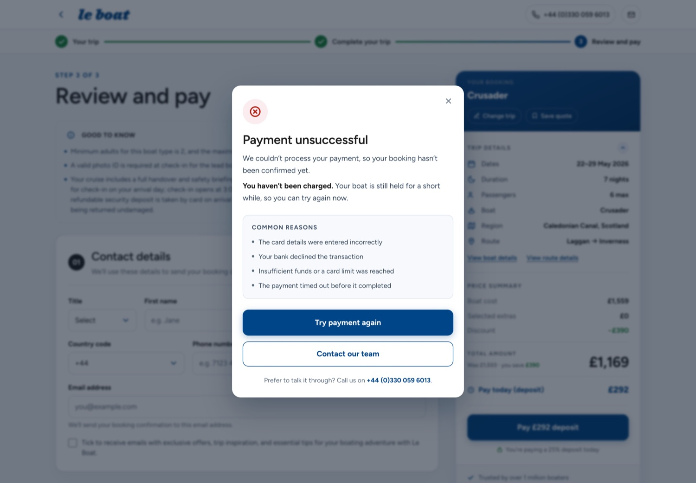
Shipped buildDeclined payment. State 13 of 15 in the catalogue.
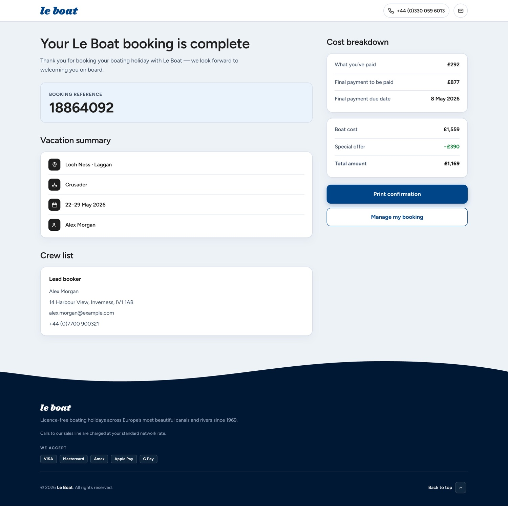
Shipped buildConfirmation. The flow finished, not just demonstrated.
The business logic that had been living inline got pulled into pure,
tested functions: the deposit schedule (with a property test proving the
instalments always sum to the total, no rounding leak) and the booking-note
normaliser (at most three notes, 400 characters each, truncated on a word
boundary — eight cases). Those are the two places where a silent failure
would be a financial or legal problem rather than a visual one.
What I parked, and said so
An extras discovery layer — search, filter chips, recommendations — was
built, liked, and moved out of scope. It lives on its own branch with a
written note recording where it is and how to restore it. Bundle-first
variants were explored and not shipped; the study's evidence for bundles
was thinner than for the card format, and 40% of travellers build their
own. Shipping the structural win first and testing bundles separately
keeps the result readable.
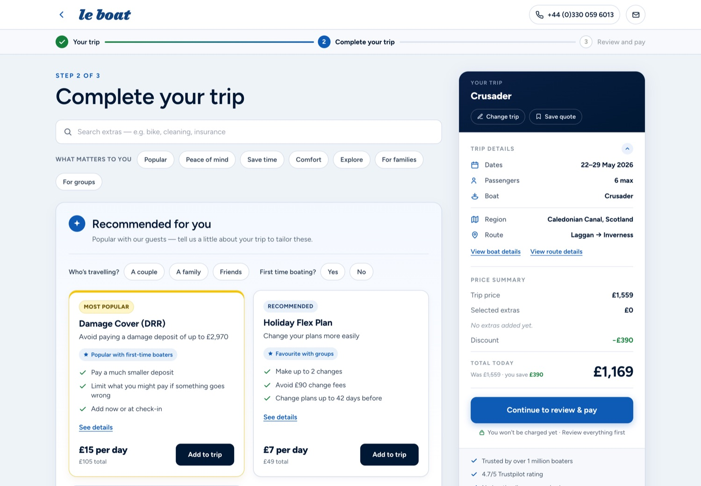
Parked explorationExtras discovery. Lives on a parked exploration branch. Revisit when category expand rates say four groups aren't enough.
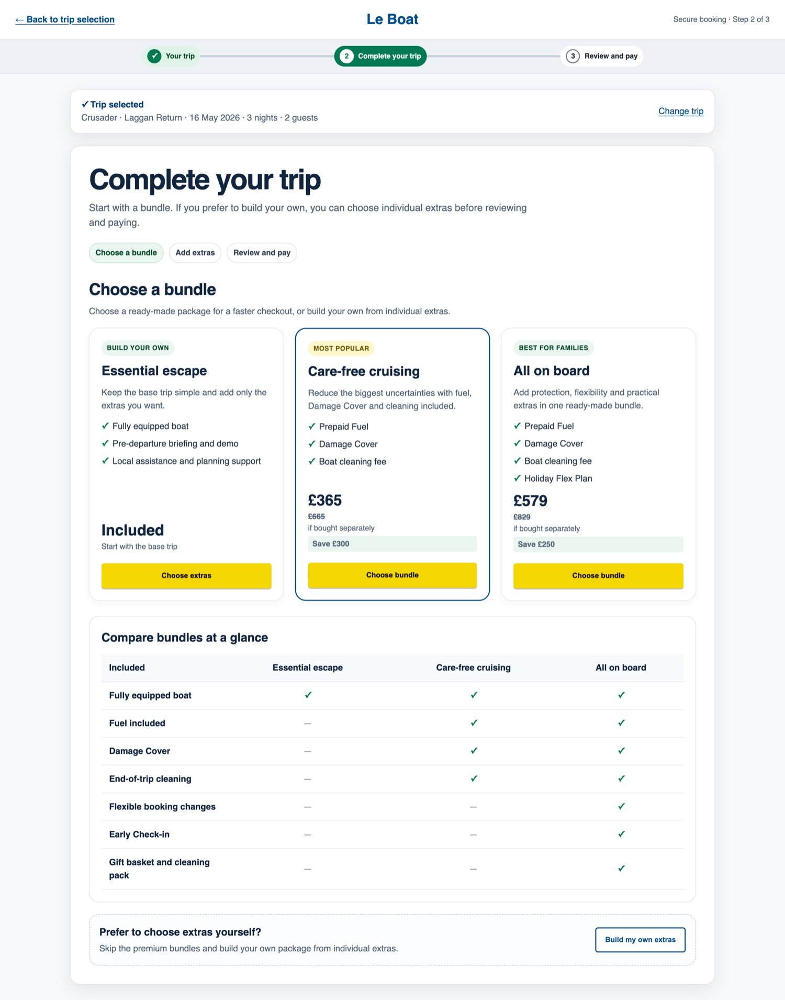
Parked explorationBundles. Held back so it doesn't confound the structural test — it's test 2 on the roadmap.
09 Instrumentation and proof
A preference signal is not a result.
69% of participants preferred the new flow. That is a reason to build it
and not evidence that it converts. Here's the plan that was handed over
with the code.
The metric set
One primary metric, chosen before the test runs. Secondaries to explain
the mechanism. Guardrails that can stop a rollout even if the primary wins
— because an extras uplift bought with a drop in booking completion is a
loss wearing a win's clothes.
Metric
Kind
Why it's on the list
Extras attach rate bookings with ≥1 extra ÷ completed bookings
Primary
The single number the restructure is arguing for. Pre-registered, not chosen after the fact.
Extras revenue per booking
Secondary
Separates "more people adding something" from "people adding more". Different design implications.
Damage cover attach rate
Secondary
Isolates the finding-12 fix. The concrete-numbers change should move this specifically.
Step-2 → step-3 progression
Secondary
Tests whether the nudge helps or costs. The one place the ethics question becomes empirical.
Category expand rate
Secondary
Validates the two-cards-then-expand call. High expansion means the default is too tight.
Checkout completion rate
Guardrail
The redesign must not cost bookings. Any degradation stops the rollout regardless of attach.
Extras removal & refund rate
Guardrail
Catches persuasion that outruns comprehension. Regretted purchases are a cost, not a conversion.
Time to complete step 2
Guardrail
The study's time-on-task rose. Order effect or real friction — only live data separates them.
Where the numbers come from
Before specifying a single new event, I read what production already
sends. The checkout is instrumented through a tag manager into analytics,
with an experimentation platform and session replay alongside — so most
of the metric set above is a query, not a project. Knowing that is the
difference between a measurement plan that runs next sprint and one that
waits a quarter for engineering time.
Already emitted in production
What it answers
beginCheckout
The denominator. Every rate in this case study sits on it.
accordionItemStateChange carries an id and open/closed
The most valuable event in the stack. The old extras UI is an accordion, and every open is tracked — which means "extras were almost hidden" stops being a quote and becomes a percentage of travellers who never opened them at all.
Attach behaviour per product, and the add/remove churn that exposes hesitation — and doubles as the regret guardrail.
proceedToPayment, purchase full ecommerce payload
Progression and conversion. The boat is a known line code, so anything else in the basket is an extra — attach rate falls straight out of the purchase payload.
selectBookingExtrasError, applyPromoCodeError
Revenue lost to failure rather than to persuasion. Usually the cheapest thing on any roadmap.
Experiment-platform goals booked-bare vs booked-with-extras
Attach rate, already defined as an experiment goal by someone else — a pre-agreed definition I don't have to defend in a review.
Session replay + struggle detection
Where the rage-click, the zig-zag scroll and the back-navigation came from. Turns the four behaviours in §1 from observations into counts with a denominator.
Then the gaps — the behaviours the new flow introduces, which nothing
tracks because they didn't exist before. These go into the tag spec
before launch, not after:
Category expand rate — tests the two-cards default directly.
Nudge shown / accepted / dismissed — the ethics question of §7, made empirical. Today there is no way to answer it.
Detail-view opens per extra — the new flow's equivalent of the accordion event, and the read on whether the finding-12 fix is being used.
Scroll depth on the extras step — the direct measure of scroll fatigue.
Time to first extras interaction — how long orientation actually costs.
Writing that list is design work, not analytics housekeeping. A flow that
ships without it produces a result nobody can explain — only observe. If
the nudge wins, I want to know whether it won because it persuaded people
or because it slowed them down enough to think.
Testing when you don't have the traffic
Le Boat is a considered, seasonal purchase. Checkout volume doesn't support
the test cadence a high-frequency e-commerce site takes for granted, which
changes the strategy rather than excusing it: test whole
experiences, not components. A structural change produces an
effect large enough to detect; a button-colour test on this traffic is a
way to spend six weeks learning nothing.
So the flow shipped as one variant against the current checkout, and the
calculator below is the one I used to argue for that scope — and to set
expectations about how long an answer takes.
Standard two-proportion sample size at α=0.05 (two-sided), power=0.80.
Real planning adds a full business cycle minimum and a seasonality
check — a test that reads out in nine days still runs for two weeks,
because Tuesday traffic and Sunday traffic are different people.
Pull the detectable lift down to +5% and the same traffic needs over seven
months; at +3% you are waiting the better part of two years. That is the
whole argument for structural tests over
micro-optimisation, made in one interaction — and it's why the roadmap
sequences the nudge variant after the flow test rather than
confounding the two.
What runs after the first read-out
Nudge treatment — blocking comparison modal against the study's recommended inline comparison. The ethics question, decided with data.
Bundles — value-led bundle cards above build-your-own, against the flat catalogue. Held back so it doesn't confound the structural test.
Category defaults — two cards visible against three, informed by the expand rate the first test produces.
Discovery layer — the parked search-and-filter work, if category expand rates say the catalogue is outgrowing four groups.
10 The read-out
It shipped to eight locales. Here is what moved.
The redesign went live on 20 July 2026 —
the redesign's feature flag flipped to true for
every locale, reaching production the same morning. Ten weeks of data
later, every metric the work targeted moved in the right direction.
The go-live is not an estimate, and the data confirms it without being
told: the legacy flow's signature event — an accordion opening — falls
88% across that boundary. The accordion does not exist in
the redesign.
Extras engagement nearly doubled
In the 71 days after launch against the 71 before, sessions adding at least
one extra went from 14.75% to 27.13% of booking-stage
sessions — a 12.4 point rise, +84% relative, on precisely
the metric the restructure was built to move.
Travellers who buy extras now attach 4.31 per booking, up from
3.41 — 26% more separate decisions made on that step. And the
guardrail held: progression to payment did not fall (5.62% → 5.86%). The
step got busier without getting slower.
+84%
Relative rise in sessions adding an extra, after launch against before
+26%
More extras attached per booking — 3.41 to 4.31
−99.7%
Generic checkout errors per session
−87%
Sold-out failures, designed out rather than reported
Seventy-one days after launch, against the seventy-one before
Before — 10 May to 19 Jul 2026After — 21 Jul to 29 Sep 2026
Denominator is begin_checkout_app — an event that fires on the WordPress availability journey, upstream of the checkout app, so the redesign cannot have moved it. Launch day itself excluded from both windows.
Scroll the chart sideways — every value is also in the table
Three measures, three scales, three panels — deliberately not one chart with two axes. Source: GA4 Events report, a28329558p282026147, pulled 29 September 2026.
Table view — the same numbers, without the chart
Measure
Before
After
Change
Sessions adding an extra(share of booking-stage sessions)
14.75%
27.13%
+84% relative
Extras added per adding session(add-to-basket events)
3.61
4.75
+32%
Progression to payment(the guardrail — share of sessions)
5.62%
5.86%
+0.24pp
Failure states: the result that carries its own control
Error rates per booking-stage session, against the same calendar window a
year earlier:
Error rates per booking-stage session — and the state nobody touched
Summer 2025 — beforeSummer 2026 — afterUntouched by the redesign (control)
Matched windows, 21 July to 29 September, 2025 against 2026. Rates are per booking-stage session, so the 67% traffic growth between the two periods does not distort them.
Scroll the chart sideways — every value is also in the table
The grey row is the control. It fires upstream of the checkout, the redesign never went near it, and it did not move. A season, a traffic-mix shift or a broken tag would have moved all of them — instead the fall tracks the amount of design attention each state got.
Error state
What the redesign did
Before
After
Change
Generic checkout error "Oops — something went wrong"
Failures moved off a catch-all toast onto specific, actionable patterns
10.70%
0.03%
−99.7%
Sold-out extra
Moved from an error after a failed add to a card state that prevents the attempt
2.00%
0.25%
−87%
Availability error fires upstream, on the marketing site
Nothing — outside the redesign entirely
5.24%
5.46%
+4%
The third row is why the first two are credible. That error
fires upstream of the checkout and the redesign never touched it. It is
flat. A traffic-mix shift or a tracking change would have moved all three —
instead the states that got design attention fell 87% and 99.7%, and the
state outside the work didn't move.
A fall that large is also what a broken tag looks like, so the mechanism
was verified on the production branch before the number was used: the
toast utility still fires the analytics error event. The instrumentation is
unchanged. The failures genuinely stopped reaching people.
The market these numbers were made in
2026 has been a hard year for international travel — conflict and border
tension across several regions, new tariff regimes, and measurably
reduced cross-border leisure movement. Average order value across the
business fell 10% over this period, driven by the boat line rather than
anything in the checkout. Every gain above was made into that
headwind, and none of it is adjusted for it.
The one place engagement ran ahead of spend: extras revenue per booking was
level year on year, because travellers attach more and cheaper — damage
cover at €43 a time nearly tripled in units. More people protecting their
trip, at a lower average ticket. That is the brief for the next
piece of work, and §9's instrumentation is what will measure it.
11 What I'd carry forward
Three things this project settled for me.
Research in one language is research with a blind spot.
The single most actionable finding in the study — that protection cards
lack the numbers people need to commit — came from German participants
only. Three of them, independently, hit the same wall. Had the study run
in English alone, the highest-value, lowest-effort conversion fix in the
whole redesign would not have been in the report. I'd now argue for
multi-market qualitative research on any checkout serving multiple
markets, and I'd argue for it on conversion grounds, not inclusion ones.
The frame is a growth lever, and it's free.
"Choose extras" to "Complete your trip". "Protection" to "Protect your
trip". "Pay £1,169" to "Continue to review & pay". Not one of these
changed a price, a product or a step — and together they change what the
traveller thinks the page is for. Most of that reframing was done before I
arrived, which is exactly why I'd defend it: I got to watch a set of pure
copy decisions carry a structural result through testing. Framing is the
cheapest lever in growth design and the one most often left on the table,
because it doesn't look like work in a design review.
Design the measurement before you design the screen.
The reason this launch can be reported at all is that the instrumentation
was specified before the first screen was drawn — which events, on which
surfaces, with which denominators. The failure-state result stands up
because an untouched error state sits alongside the designed ones as a
control, and that only exists because someone catalogued all fifteen states
instead of the six that were being changed.
Most design work cannot be evaluated after the fact because nobody
decided in advance what evaluating it would mean. That decision
costs an afternoon and it is the difference between a portfolio of screens
and a record of what the screens did.
The cheapest growth work is the work you never repeat.
Experiment velocity gets treated as a process problem — more tests,
faster cycles, better prioritisation. Most of the time it is an
architecture problem wearing a process costume. A forked second brand, an
accessibility audit that has to run twice, a payment rate hard-coded in
four components, a metric nobody can compute without engineering time:
each one puts a fixed toll on every future experiment, and the toll is
paid forever. Removing a toll is worth more than winning a
test, because it raises the return on every test after it. That
work is invisible in a portfolio, and it is most of what separates a
design that ships once from a product that keeps improving.
Building it is how the decisions survive.
The details that carry this redesign are not in any comp. They're the
loading state that covers a three-second re-price, the token that inverts
a confirmation colour between brands, the truncation rule that keeps a
400-character booking note from breaking a phone layout, the sold-out card
that degrades without a dead button. Every one of those is a design
decision, and every one of them only gets made if the person designing is
the person building. That's the job I want: the one where the
argument and the artefact are the same object.
The work was handed to the Le Boat engineering team for backend
integration — Neptune pricing, Fiserv payment, session handling — with the
measurement plan attached. The honest headline on this case study is not a
number. It's that a structurally better checkout shipped with the
instrumentation to prove or disprove itself, which is the only version of
growth design worth defending.
12 Receipts
Where every claim above comes from.
Research
StudyCheckout restructure, 2026
Participants36 of 43
LanguagesEN · FR · DE
Questions13, think-aloud
Findings12
Recommendations6, prioritised
Build
Commits42
Pull requests3
Components17
TypeScript~5,100 lines
Tests13 / 13 passing
Error states15 catalogued
Stack
FrameworkNext.js 16 · React 19
LanguageTypeScript 5
StylingTailwind 3 + SCSS
Formsreact-hook-form + Zod
i18nnext-intl, 6 locales
TestingVitest + axe
Everything else, at a glance
Click any frame to enlarge.
Shipped Review & pay, full page
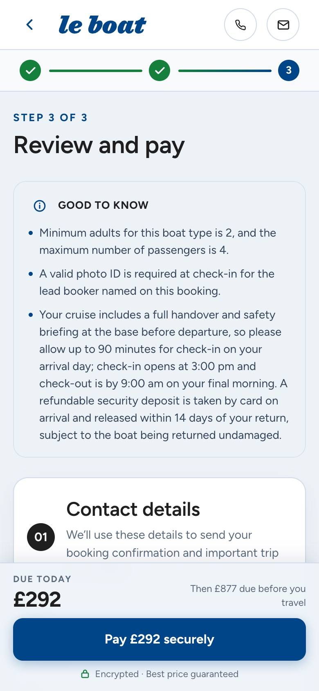
Shipped Review & pay, 390px
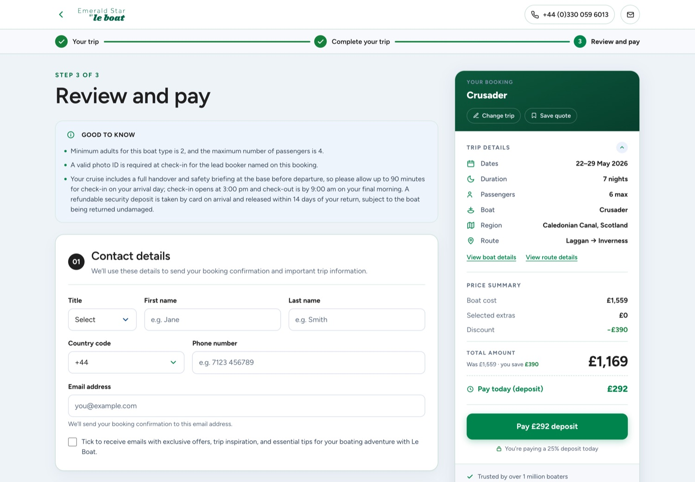
Shipped Emerald Star, review stepShipped Extras, 390px full page
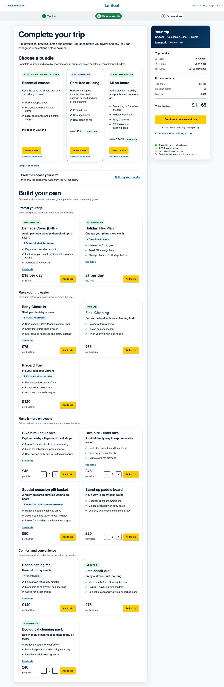
Parked Bundles within extras
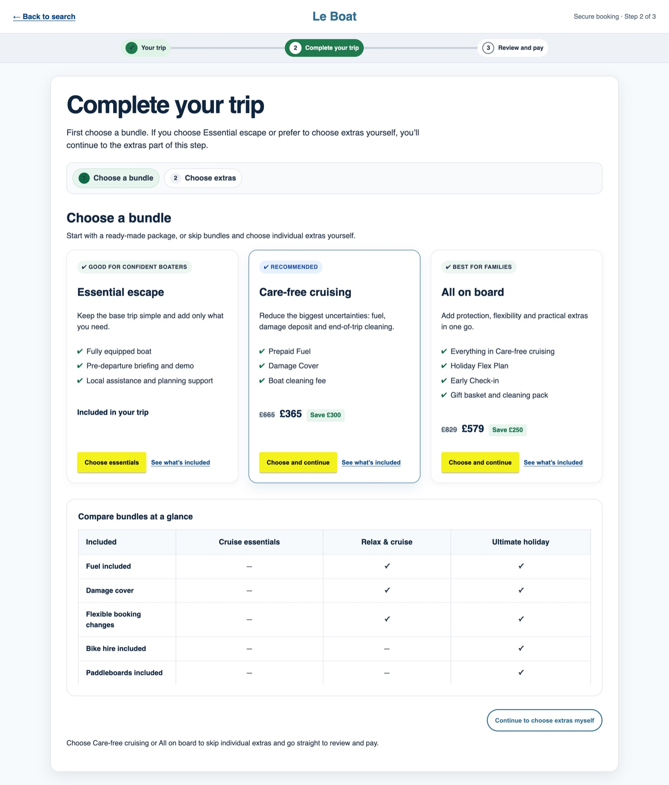
Parked Two-part bundle + extras
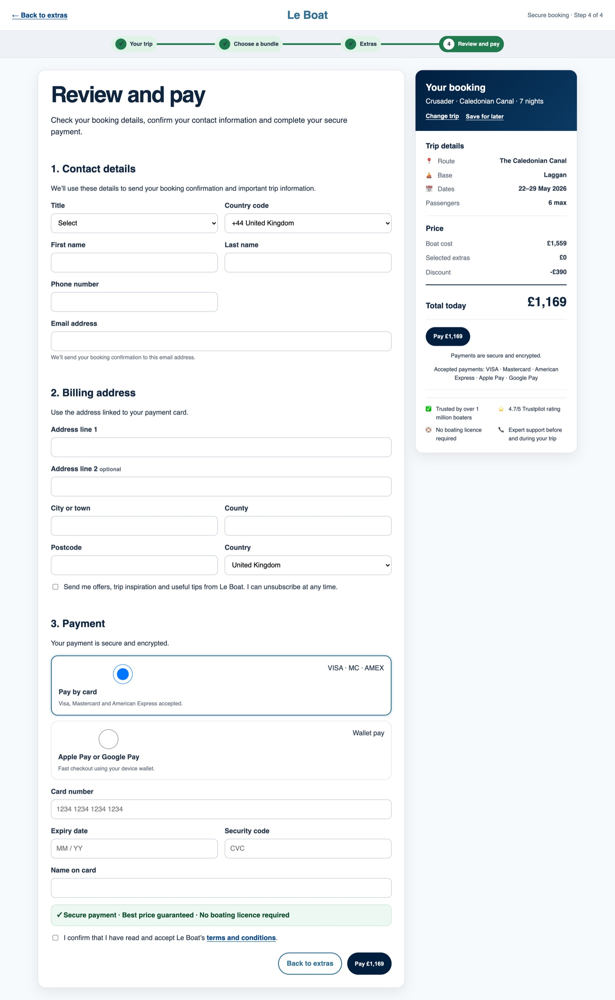
Parked Split-flow review
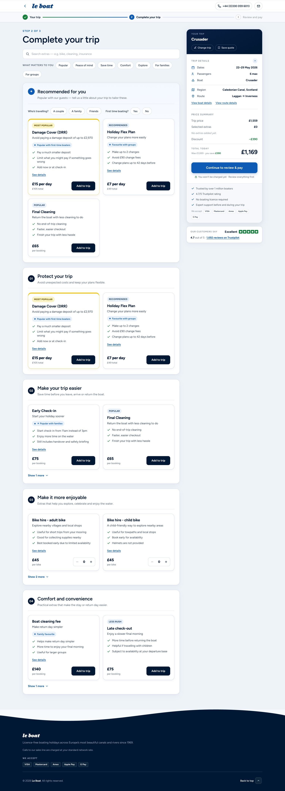
Parked Discovery layer, full page
The decision log
Dates from the commit history. The status column is the only one that
matters: it separates what a stakeholder agreed from what I chose from
what nobody has validated.
Agreedthe default of 2 is a judgement, never tested
6 Jul
Keep groups open instead of collapsing categories
Collapsing re-creates the accordion problem finding 01 warned about
My callunvalidated
6 Jul
Deposit / Pay in full replace card & wallet
Action item #9
Split unresolved"TBC" in the commit; still open at handover
6 Jul
Promo field open by default
Action item #10, recorded as A/B-test-backed
Agreedon a test I never read — taken on trust
7 Jul
Waiting state covering the re-price call
Engineering: the call takes 3–5 seconds
Agreedduration stated, not measured here
8 Jul
Booking note lifted out of the summary card
Keeps the pay CTA above the fold; fits up to 3 notes
My callunvalidated
8 Jul
Damage-cover add action moved inside the comparison
Let people act where they were convinced
My callunvalidated
9 Jul
Co-brand through tokens rather than forking
Marginal cost of brand two governs whether it keeps improving
My callmechanism verified, commercial claim unmeasured
9 Jul
Drop "Recommended" from the deposit option
The right answer depends on cash position, which we don't know
My call
13 Jul
WCAG 2.1 AA sweep, both brands
0 axe contrast violations, desktop and mobile
Tool-verifiedautomated only; no assistive-tech testing
13 Jul
Neutral text palette; navy reserved for summary card and footer
Brand feedback: "too much blue/navy"
Agreed
—
Park the extras-discovery layer
Out of scope for the milestone
Parkedbranch retained on origin
—
Ship the flat catalogue; hold bundles back
Avoid confounding the structural test
Supersededa bundles experiment was already live in production
Fourteen decisions: six agreed with someone, six mine with nothing behind
them, one verified only by tooling, one superseded. The last row is
the useful one. Parking bundles was reasoned carefully and was
wrong, because nobody asked what was already running in production — and
the answer existed the whole time. That's the failure mode this log is for.
The iteration story, in commits
5d8f3e1 brand-align checkout, neutral text palette & WCAG AA pass
0d9de09 make the two mobile sticky bars consistent
66d207b struck was/now price on Pay-in-full; drop deposit Recommended tag
1ada304 Emerald Star co-brand theming for checkout
b02e9ff extras add-to-trip default, sold-out copy, tap targets
c916c6e payment-failure pop-up + "pay today" deposit line
614410f booking note callout + deposit payment schedule
7fd9a13 record where the parked extras-discovery exploration lives
89cc6ec damage-cover CTAs inside the compare cards
bb41305 duration row, full collapsed summary, sticky card only
554d611 move Trustpilot trust widget above the summary card
3655149 checkout interaction states, searchable selects & summary refinements
6bb5c86 Apply checkout alignment action items (6 July meeting)
450120b Re-skin checkout to the Le Boat brand (Helix design system)
125657e Promote V2 to canonical routes, remove V1
The shape of it: structural redesign, then brand alignment, then the
alignment-meeting action items, then interaction depth, then co-branding,
then accessibility. Each step is its own commit, which is what made it
reviewable by people who weren't designers.